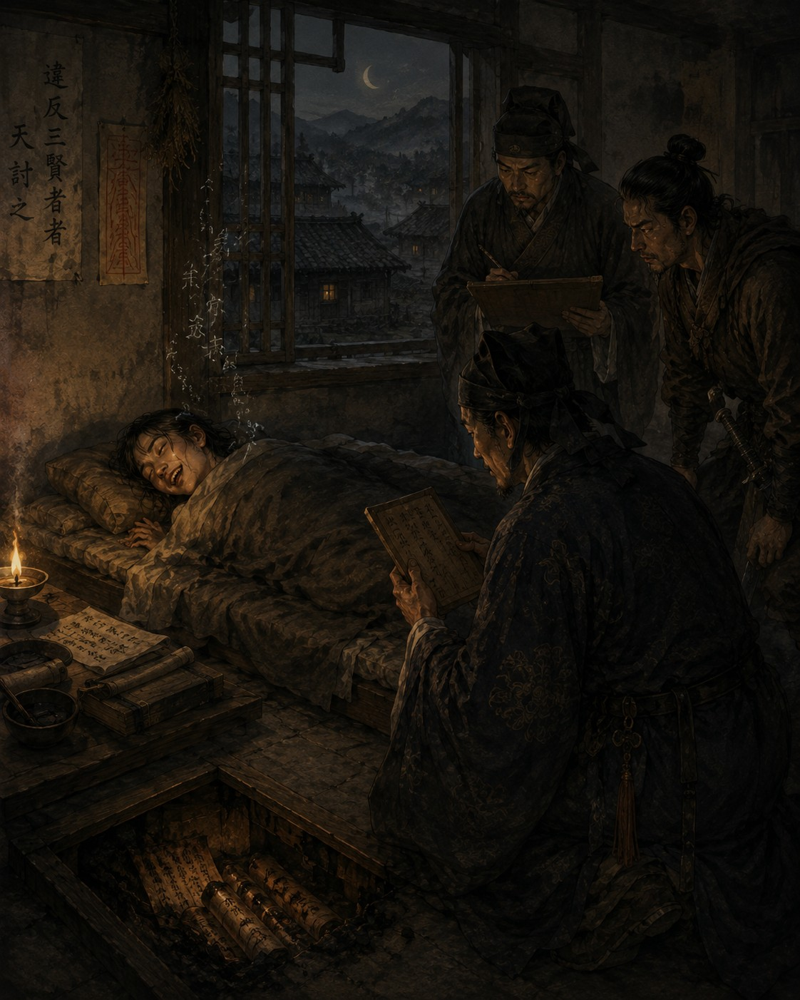

Дело о смеющемся во сне

В те годы Управление Безупречной Гармонии редко обращалось к обычным судебным следователям. Люди из столицы предпочитали сами заниматься делами о ереси, тайных обществах и слухах о нарушении Великого Разделения. Поэтому, когда в начале зимы мне передали черный футляр с печатью Управления, я понял, что речь идет не о бытовом преступлении.
Свиток мне прочел Ло. В нем было всего несколько строк:
«В уезде Хуаньшуй замечен человек, говорящий во сне. Проверить признаки нарушения Трех Даров. Действовать скрытно».
Даже спустя столько лет я помню, как перестал в тот миг чувствовать вкус чая.
Со мной, как обычно, отправились немой писец Цзянь и глухой страж Ло. Дорога заняла пять дней. Чем дальше мы уходили от больших городов, тем беднее становились деревни и тем чаще Ло замечал на воротах защитные знаки против «целостных». В последние годы такие суеверия расходились все быстрее. Люди рассказывали о детях, различающих цвета по звуку, о слепцах, узнающих лица по дыханию, о немых, которые без причины смеются во сне.
Большинство подобных историй оказывались пьяным бредом или страхом перед болезнями. Но иногда за страхом скрывалось что-то другое.
Местный судья принял нас ночью и первым делом велел закрыть двери.
— Я не хотел писать в столицу, — признался он. — Но слухи уже пошли по округе. Если крестьяне решат, что здесь объявился целостный, начнется смута.
— Что произошло?
Судья помедлил.
— Старый крестьянин донес на собственного сына. Говорит, тот разговаривает во сне сам с собой.
Я услышал, как Ло переступил с ноги на ногу. В Империи человек никогда не говорил «сам с собой». Речь существовала для других людей. Даже молитвы полагалось произносить вслух, перед собранием или перед алтарем. Бормотание во сне считалось дурным признаком, а смех спящего почти прямо указывал на вмешательство злых духов.
— И только поэтому вы написали в столицу?
— Нет. Три недели назад в уезде пропал странствующий монах. А еще раньше кто-то вынес из хранилища уездной школы старые трактаты дораздельной эпохи.
Вот тогда мне стало не по себе. Дораздельные тексты хранились под надзором государства. Простолюдинам запрещалось знакомиться с описаниями мира, существовавшего до Великого Ритуала, и в особенности с описаниями человеческого тела.
На следующий день мы отправились в деревню. Дом крестьянина стоял у замерзших рисовых полей. Старик встретил нас во дворе и сразу начал оправдываться:
— Я не хотел доносить на сына. Но он стал другим. По ночам смеется. Иногда говорит так, будто отвечает кому-то. А недавно я услышал, как он шепчет над свитком. Сидит один, шуршит свитком и шепчет. В нашем доме все слепые, господин. Читать этот свиток здесь некому.
— Где свиток?
Старик долго молчал.
— Я его сжег.
Мы вошли в дом. Сын сидел у стены и пил чай. Ло сказал мне вполголоса, что ему лет двадцать и что лицо у него спокойное, как у человека, привыкшего учиться.
Слепой с рождения, он слышал и говорил, как я. Я расспрашивал его о пропавшем монахе и украденных трактатах, и он отвечал спокойно и разумно, чересчур разумно для человека, которого деревня уже почти считала одержимым.
Тогда началось цзянь, наблюдение. Я попросил оставить нас в доме до ночи.
После заката юноша уснул довольно быстро. Мы сидели молча. За стенами свистел ледяной ветер.
Потом юноша заговорил, очень тихо. Но страшнее слов был смех, в котором я не услышал ни безумия, ни злобы. Так смеется человек, которому показали что-то прекрасное.
Цзянь возле меня перестал дышать.
— Нет… это невозможно… — произнес юноша и засмеялся снова.
Меня пробрал холод. Спящий разговаривал так, словно на что-то смотрел.
На следующий день началось сы, осмысление. Мы осмотрели дом внимательнее, и Цзянь быстро нашел под половицей тайник. Там лежало несколько обугленных листов старого трактата: сын, как видно, успел выхватить их из очага. Почти весь текст погиб в огне, уцелело одно предложение. Цзянь вырезал его для меня на пластинке:
«Читающий про себя слышит голос, которого нет, и видит то, чего нет перед глазами».
Я долго держал пластинку в пальцах. Потом попросил снова привести юношу.
— Где ты взял трактат?
Он ответил не сразу.
— Мне дал его монах.
— Тот, что пропал?
— Да. Он читал мне вслух, а листы оставил, чтобы я держал их в руках и вспоминал.
— Чему он тебя учил?
Юноша неожиданно улыбнулся, это было слышно по голосу.
— Читать молча.
В доме стало тихо.
— Что это значит?
— Когда слова произносят вслух, они остаются снаружи, — ответил он. — Монах сказал, что раньше люди умели говорить внутри собственного разума, без голоса. Я попробовал повторять прочитанное про себя. Сначала ничего не выходило. Потом слова стали оставаться.
Я услышал, как Ло медленно кладет ладонь на рукоять меча. Это уже пахло ересью.
— И поэтому ты смеялся во сне?
— Во сне слова стали на что-то похожи. У каждого появилось свое место и своя… я не знаю, как это назвать. Монах сказал, что так выглядит то, что зрячие называют «видеть».
От любого другого я принял бы это за бред, но он говорил слишком спокойно. Тогда я понял вещь, которая испугала меня сильнее слухов. Никакого целостного перед нами не было. Перед нами сидел обычный слепой, который научился пользоваться собственным разумом иначе, чем было принято в Империи.
На третий день настало дуань, решение. Я приказал сжечь оставшиеся листы трактата. Старому крестьянину велел забыть обо всем услышанном. В столицу я отправил отчет, который под мою диктовку написал Цзянь:
«Признаков нарушения Трех Даров не обнаружено. Слухи возникли вследствие деревенских суеверий».
Когда мы покидали деревню, Цзянь коснулся моего рукава и вложил мне в ладонь пластинку:
«Ты солгал Управлению».
Я долго молчал, потом ответил:
— Нет. Я просто не уверен, что Небо запрещало людям думать молча.
Ту ночь мы провели в придорожной гостинице. Я лежал без сна, слушал ветер за окном и впервые за много лет поймал себя на мысли, от которой хотелось отвернуться. Что, если Великий Ритуал разделил вовсе не человеческие чувства? Что, если он разделил сам способ, которым человек думает?